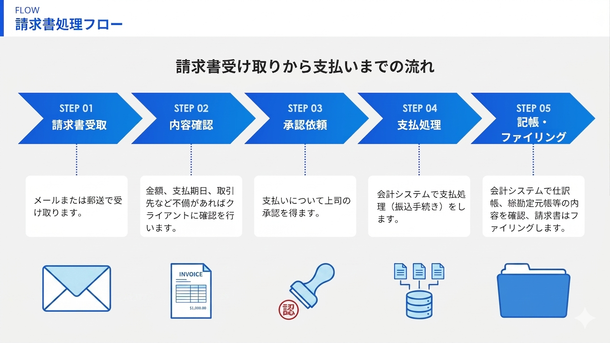
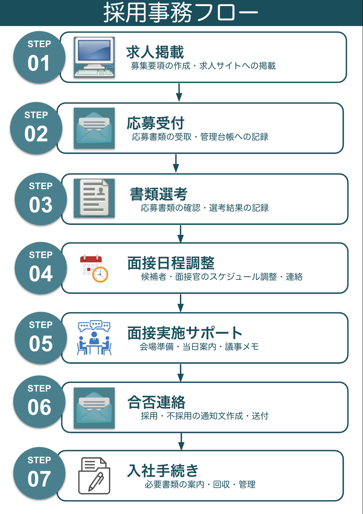
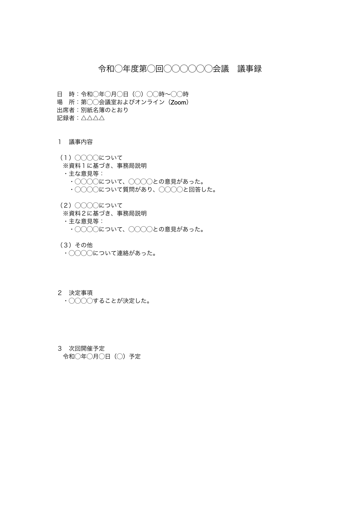
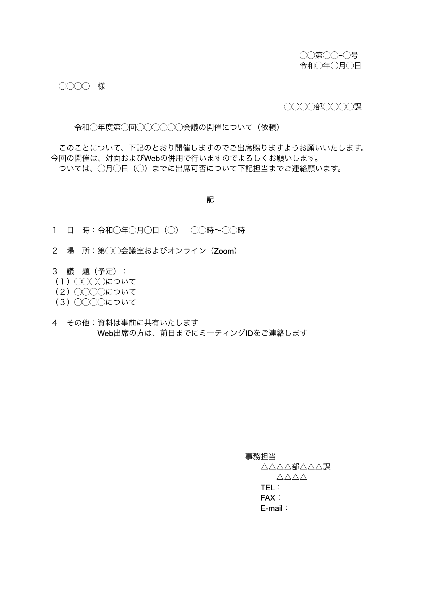
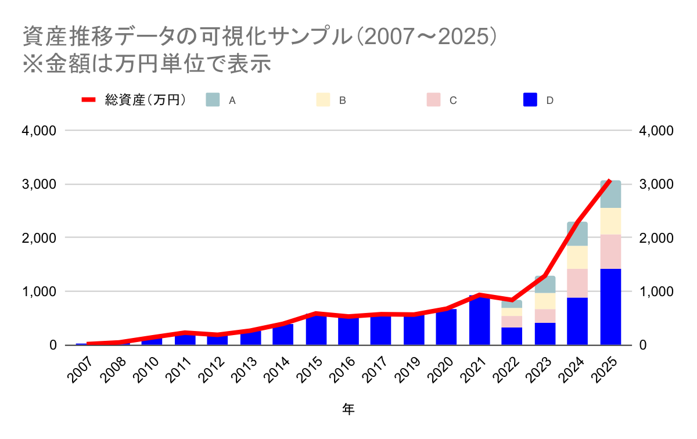
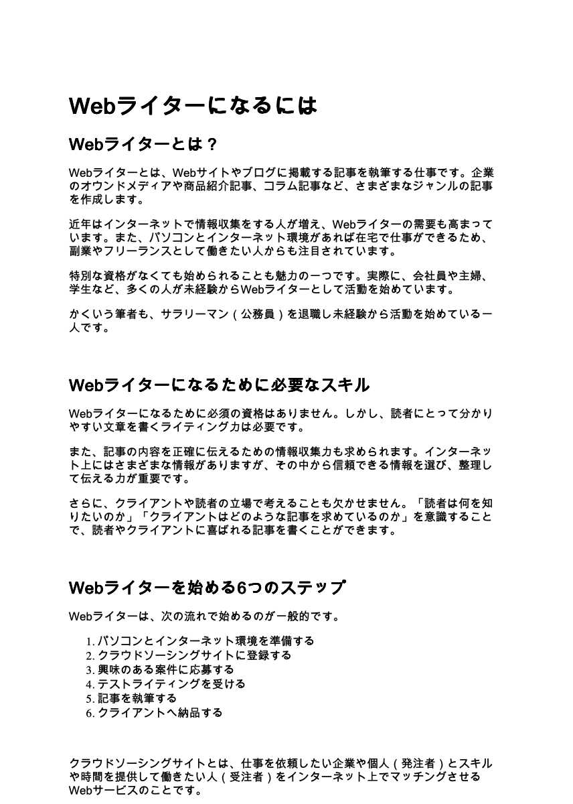
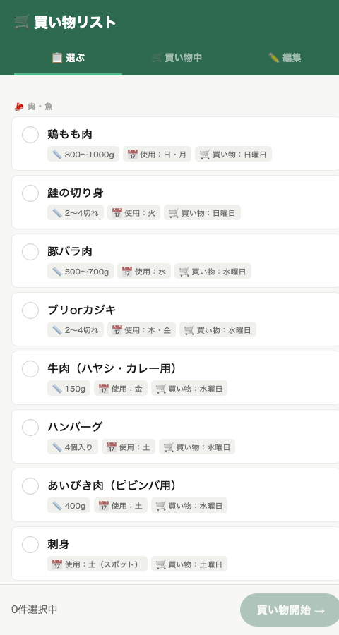
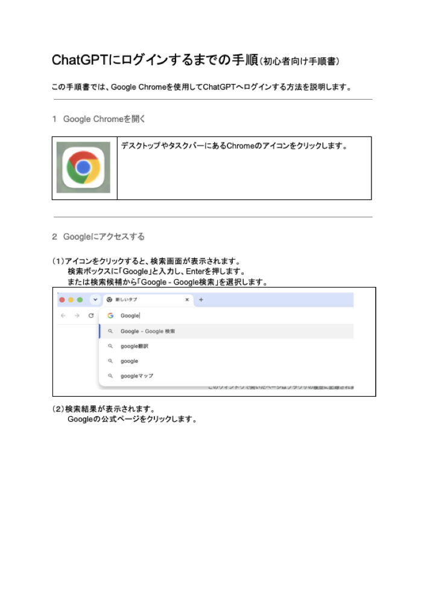

請求書処理フロー図
請求書の受取から支払・記帳までの流れを、経理担当者が迷わないよう簡潔に可視化。
PDFで見る →元県職員×バックオフィス支援のフリーランス
24年間の行政経験と簿記・FPの知識を活かし、中小企業・個人事業主のバックオフィス業務をサポートします。
補助金申請・経理補助・事務効率化など、面倒な裏方仕事をまるごとお任せください。
地方自治体(県庁)に24年間勤務し、2026年3月よりフリーランスとして独立。 行政での実務経験を活かし、バックオフィス支援・事務サポートを中心に活動しています。
日商簿記2級・FP3級を保有し、経理・総務まわりの実務に対応。 補助金申請サポートの経験もあり、書類作成から手続きまで丁寧にサポートします。
24年の実務経験
申請〜完了払いまでのフルサイクル
日商簿記2級
FP3級
Claude Code等

請求書の受取から支払・記帳までの流れを、経理担当者が迷わないよう簡潔に可視化。
PDFで見る →
応募受付から入社手続きまで、採用アシスタント業務の裏方フローを一目で分かる形に整理。
PDFで見る →
会議開催に伴う議事録を、実務での利用を想定し簡潔で分かりやすい構成で作成。
PDFで見る →
会議開催に伴う一連の文書(開催案内・出席者名簿・事項書)一式を作成。
PDFで見る →
17年間の資産推移データを一元管理し、区分別の推移が分かるグラフとして可視化。
PDFで見る →
Webライター初心者向けに、必要なスキルや始め方を分かりやすく解説した記事サンプル。
Wordで見る →
Claude Codeを使って実装した、家庭用の買い物リスト管理アプリ。カテゴリ別の食材リストから必要なものを選び、買い物中はチェックリストとして使える。
画像で見る →
ITツールに不慣れな方でも迷わず操作できるよう、画面キャプチャ付きで手順を1つずつ丁寧に解説したマニュアル。同じ内容をAIツール(Vrew)でナレーション付き動画にも展開しました。
PDFで見る → 動画で見る →